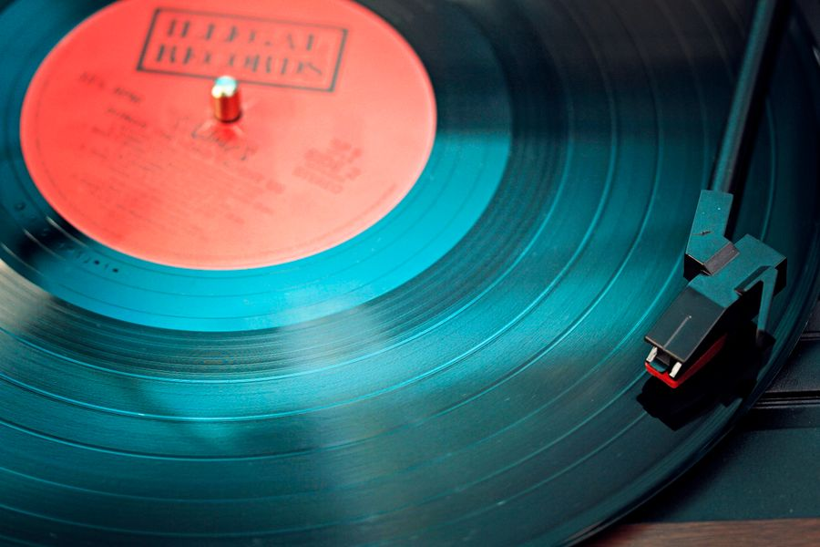
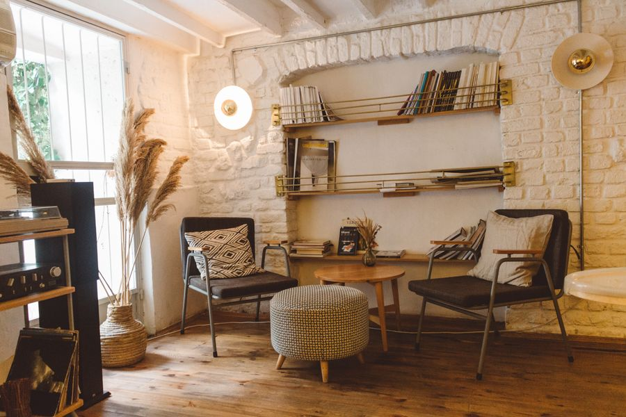

Visit the shop

Copper Groove sits on a fictional side street with two listening stations, a coffee corner, and crates organised the way people actually dig: by mood first, alphabet second. Staff picks are written by hand, and every Used record is cleaned and play-tested before it hits the wall.
Opening hours
| Day | Shop | Listening bar |
|---|---|---|
| Monday to Thursday | 10am to 8pm | 12pm to 7:30pm |
| Friday and Saturday | 10am to 9pm | 12pm to 8:30pm |
| Sunday | 12pm to 6pm | 12pm to 5:30pm |
Listening nights
Friday — Velvet Static, start to finish
One album, no skips, phones down. Nova Rae's Velvet Static on the shop system, with the story of the sessions between sides.
Saturday — New Arrivals First Listen
Be first to hear this week's New and graded Used arrivals before they go on the wall on Sunday.

Book a listening-night seat
Good to know
Every Used record is cleaned, play-tested on both sides, and graded for sound, not just looks. If a graded record disappoints, bring it back within 14 days for a refund or swap.
Yes — two listening stations are always open, and any record on the wall can go on a station deck. Listening-night seats are separate and worth booking ahead.
We buy collections on Tuesdays and Thursdays. Bring them in, get a coffee, and we will grade and price them while you dig.
Shipping is $5.95, and free once your discounted subtotal reaches $75. Records ship in proper mailers with the vinyl outside the sleeve.
The Needle Drop
One short email each Friday: new arrivals, one staff pick, and listening-night seats before they open to everyone.